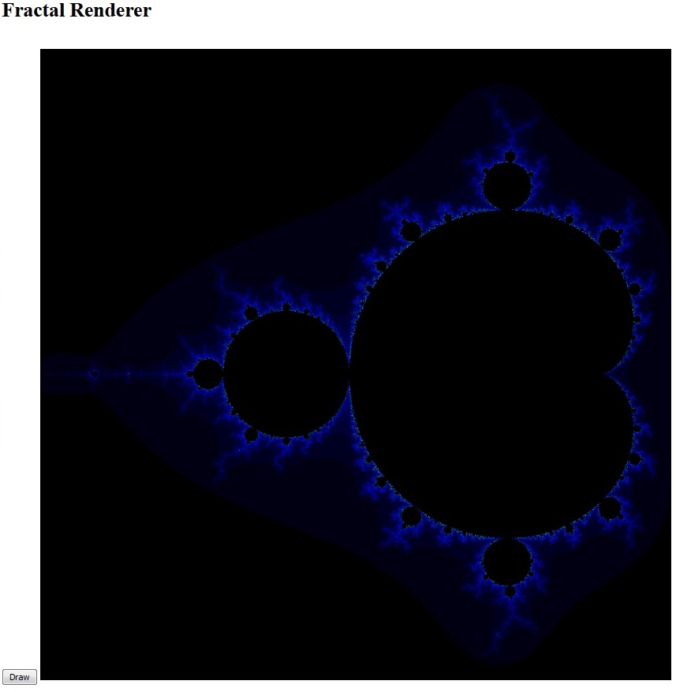
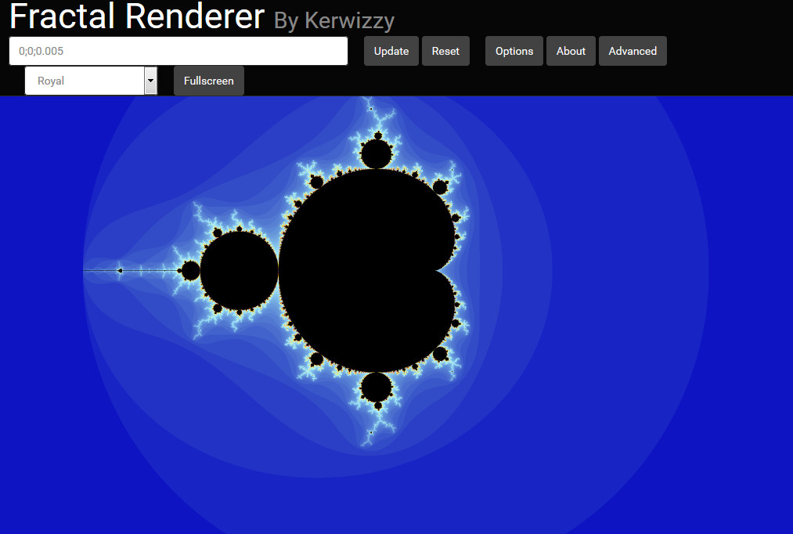

About a year ago, in the spring of 2016, I became inspired to make a fractal renderer. Most fractal renders only let you explore the Mandelbrot Set. I knew there were other fractals, such as the Burning Ship Fractal but I didn't find any fractal renders that let you enter your own functions. So I decided to write my own fractal renderer, with the goals of exploring other fractals, learning something, and having a cool project in the end. I accomplished all my goals. (somewhat uncommon with me – I often abandon the projects and do something else, never to return) You can check out the current version at http://kerwizzy.github.io.
I decided to write my fractal renderer in HTML5 and Javascript, and just try to make it render the Mandelbrot Set, and then, when I had that working, modify it so it rendered other fractals. With this goal in mind, and with my Dad's help (I didn't have a ton of experience with JS canvases and stuff) I started writing my fractal renderer.
As with most of my projects, I started very simple and worked forward. My first saved version didn't even display the Mandelbrot set correctly! But after a few days, my dad and I got a simple renderer working:

An early version of Fractal Renderer
At that point, I was able to change my fractal iteration function and display the Burning Ship fractal! So I accomplished my goal of being able to explore other fractals. Then what? I kept on improving my program. I soon added:
- Better color pallets. I actually used Blender's node editor to help me generate smooth gradients between colors.
- A nicer, prettier UI
- A drop-down to switch between fractals
- Some explanatory text
Over time, I kept adding features, and eventually got to the great renderer you can see at http://kerwizzy.github.io!

The current version of Fractal Renderer
Comment on Twitter